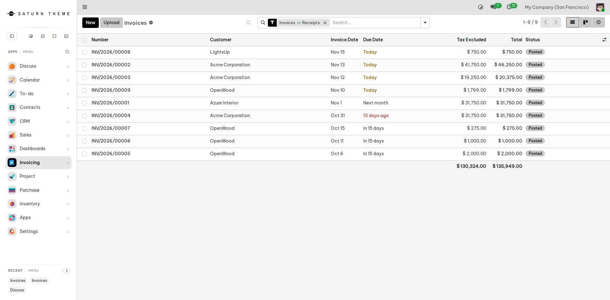
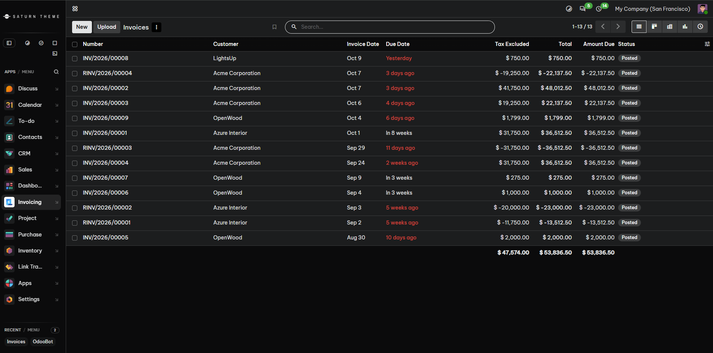
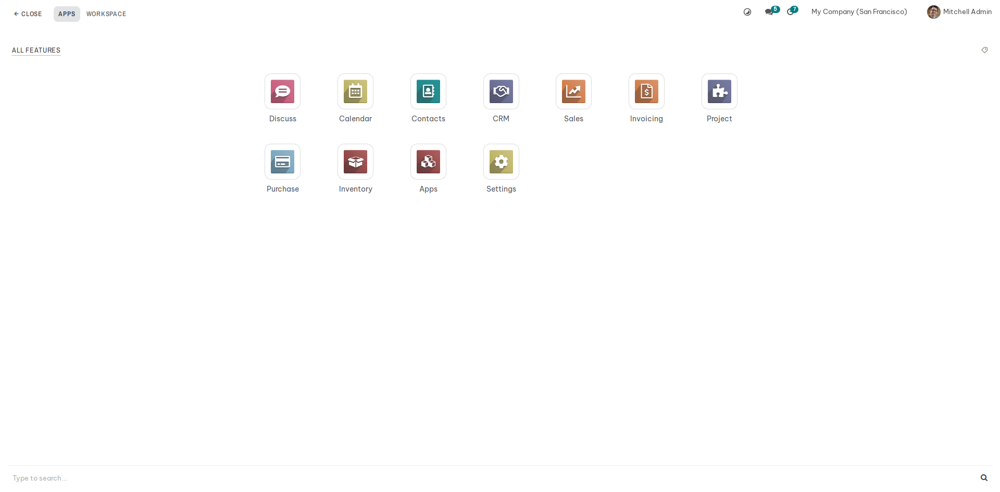
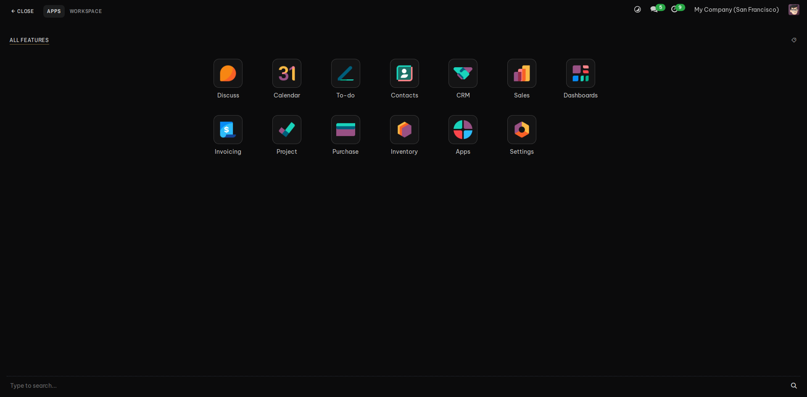
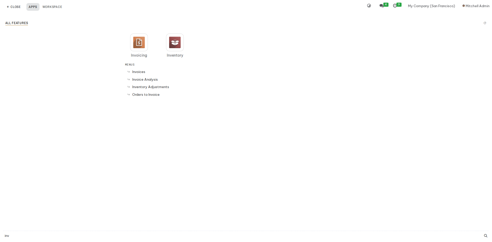
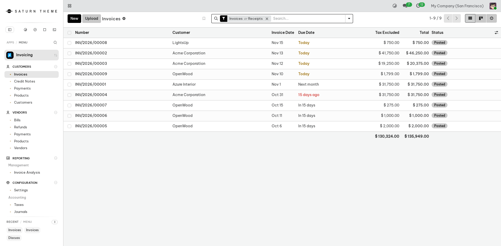
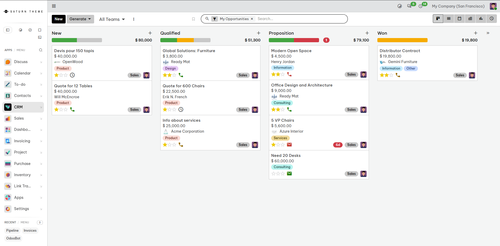
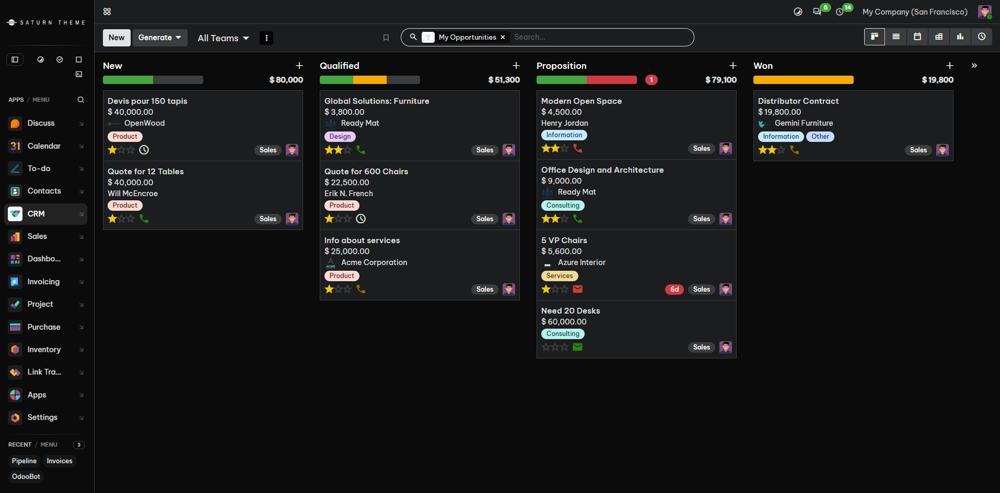
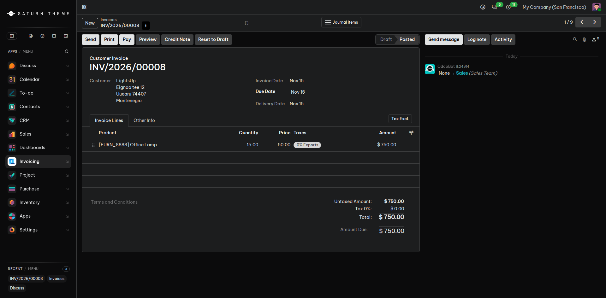

Every installed app sits in a left sidebar. Click one to open its menus right there, grouped by section.
A clean grid of all your apps, with instant search across apps and menu items as you type.
Switch between light and dark in one click from the sidebar. Lists, kanban and forms are all styled.
Recently opened menus and records are listed as chips at the bottom of the sidebar so you can jump back fast.
Pin the apps you use most and bookmark views to your own workspace tab in the app drawer.
Sidebar shortcuts for the activity hub, workspace and command palette (Ctrl+K), plus a compact sidebar mode.
Use the scheme switch in the sidebar toolbar. Your choice is kept as you move between apps.

Open it from the grid icon in the top bar. All apps at a glance, with a Workspace tab for your bookmarked views.


Start typing in the app drawer to filter apps and jump straight to any matching menu.

Open an app's menu from the sidebar to see its sections (Customers, Vendors, Reporting, and so on) without leaving the page.

Kanban, list and form views (including the chatter) all follow the theme, in both schemes.



saturn_backend folder into your addons path.web and mailQuestions or issues? Contact Sanxus Lab at sanxus.com.